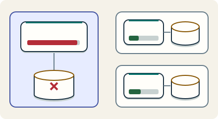

Go deeper · 7 minutes
Many customers on one system
Fairness and failure boundaries matter as much as total capacity.
Open this lesson
One customer ruins everyone's morning
A shared analytics service has plenty of average capacity. One customer submits a thousand broad queries and fills the worker queue. A small customer's one quick query waits behind them. Fleet capacity is not a promise of fair access. Tenant identity must follow work through admission, queues, caches and storage.
Budget work at every scarce resource
Let tenant A arrive first and fill the workers. Compare admission quotas, fair dispatch and overlapping shuffle shards. Count quiet tenants that miss their four slots.
Worked example: cells and overlap
A cell boundary is real only if its critical serving dependencies respect it. Five percent of tenants need not mean five percent of requests or revenue. Shuffle sharding reduces shared fate but does not eliminate partial overlap. These placement calculations are separate from the traffic engine noisy-neighbour event.
Isolation depends on placement
- 20 independent cells: 2,000 tenants / 20 = 100 per cell. One cell reaches 5% of tenant count.
- 2 of 10 workers: 45 possible pairs. Two uniform assignments match exactly with probability 1/45.
- Partial overlap matters: 17/45 share at least one worker. A shared database can also break the cell boundary.
Trace the actual blast radius
A shared control plane can provision cells without sitting on every request. Include tenant identity in cache keys and authorization; fair scheduling cannot prevent a data leak. Larger tenants may need dedicated cells or priced quotas. More isolation costs idle headroom, repeated operations and migration work. Make that cost explicit instead of promising unlimited capacity on a shared pool.
Follow the failure through shared dependencies
- Tenant cell: Ingress, workers, queues and critical data share a failure boundary.
- Shared identity or keys: An outage here can reach every cell that needs it on requests.
- Prove the boundary: Test a runaway query, full disk and bad deployment; name affected tenants.
Key numbers
- Tenants per cell
- ≈ 100. 2,000 ÷ 20 under even placement
- One-cell reach
- ≈ 5%. 1 ÷ 20; only with independent request paths
- Identical shuffle pair
- ≈ 2.2%. 1 ÷ choose(10,2) = 1/45; partial overlap is larger
Check your reasoning
Think through these questions before opening the lesson. In the game you can test the idea and compare your reasoning.
- One tenant scans 1 TB per query while another reads one key. Which policy bounds the first tenant's use of shared workers?
- Why not just add more workers for the noisy tenant? Follow-up: queries keep getting wider.
- Twenty cells synchronously use one shared database for every query. What can that database's outage affect?
- You claim a cell failure reaches only 5%. Prove it. Follow-up: the key service fails.
- Two tenants independently choose uniform unordered pairs from ten workers. What is their chance of any shared worker?
The key point
Limit work per tenant and trace every shared dependency before claiming a small blast radius.
Practise this idea
- Medium
Rate limiter for a public API
Developers call your public API from scripts and apps. A few misbehaving or malicious clients can crowd out everyone else. Build limits that are fair, fast and cheap, and that survive a retry storm.
- Hard
Black Friday marketplace
Once a year a marketplace puts thousands of deals live at the same minute. Millions browse and search, a few doorbuster items get hammered, and a smaller crowd checks out. A payment must never be taken twice, and the day must survive the card processor having a bad hour.
- Hard
Metrics platform
Thousands of services send a stream of measurements: CPU, errors, latency. You store them, draw the dashboards and fire the alerts. The platform watching everyone else must never go down first, and one customer creating millions of new series can ruin the bill.
- Hard
Logs platform
Build a shared log service for 2,000 teams. Collectors send compressed chunks, and on-call engineers find logs by tenant, service and time before filtering their words. A wide search or a runaway label must not stop other teams from investigating an outage.